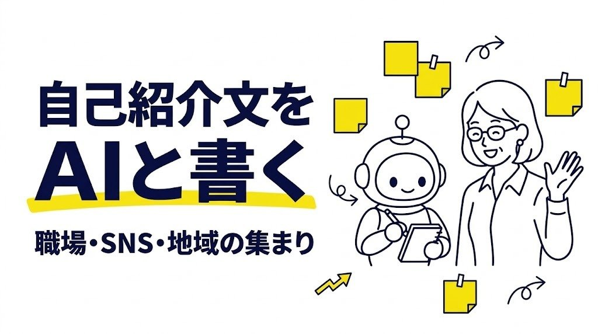

ホーム ＞ 文章
文章 の記事一覧（3件）

文章2026-10-20自己紹介文をAIと書くプロンプト｜職場・SNS・地域の集まりで使える
ChatGPT・Claude・GeminiなどのAIと一緒に、自己紹介文を書くためのプロンプトを紹介します。材料の集め方、場面に合わせた長さと言葉づかい、話し言葉への直し方まで、コピーして使える型と、うまくいかないときの直し方をまとめました。
 文章2026-10-13
文章2026-10-13英語のメールをAIで書くプロンプト｜日本語から自然なビジネス英語へ
英語のメールをAIに手伝ってもらうためのプロンプトを紹介します。日本語の要点から英文を作る基本形、受け取った英文メールの読解と返信、表現の確認まで、そのまま使える例文とうまくいかないときの直し方を解説します。
 文章2026-10-13
文章2026-10-13断りのメールを角を立てずに書くプロンプト｜依頼・誘い・営業に使える
仕事の依頼や誘い、営業の連絡などを、相手との関係を保ちながら断るメールをAIに下書きしてもらうプロンプトを紹介します。状況別の例文と、うまくいかないときの直し方、送る前に確認したいポイントも解説します。
次の一歩に役立つ本・道具
文章術の本AIの文章を直す力がつく参考（2026年10月の人気）：Amazon：「文章術のベストセラー100冊」のポイントを1冊にまとめてみた。・新しい文章力の教室・ポチらせる文章術 ／ 楽天：ほんとうのことを書く練習・「文章術のベストセラー100冊」のポイントを1冊にまとめてみた。
Amazon楽天プロンプトの書き方の本指示文の型を増やす参考（2026年10月の人気）：Amazon：ChatGPTを使い尽くす！ 深津式プロンプト読本・AI時代の質問力 プロンプトリテラシー・最短で最大の成果を上げる AIアウトプットの全技法 ／ 楽天：ChatGPTを使い尽くす！ 深津式プロンプト読本
Amazon楽天ワイヤレスキーボード入力を快適に参考（2026年10月の人気）：Amazon：ロジクール K295・ロジクール PEBBLE KEYS 2 K380s・エレコム TK-FDM110TX ／ 楽天：ロジクール K295・ロジクール K380s・ロジクール MX KEYS
Amazon楽天